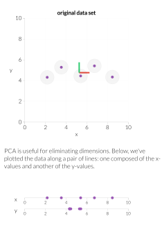

Week 13¶
Principal Component Analysis (PCA)¶
PCA is a method for dimensionality reduction. Start with data, \(x^{(i)} \in \mathbb{R}^p\) The goal is to convert the data into a lower dimensional space, \(\beta^{(i)} \in \mathbb{R}^k\) where \(k<p\).(1)
- Clustering can also be thought of as dimensionality reduction: $f: x^{(i)}\mapsto \mu_{f(i)}, rather than retaining all \(n\times p\) entries \(x^{(1)}, \dots, x^{(n)}\), instead represent data by the cluster assignment \(f\) and \(k\times p\) entries \(\mu_1, \dots, \mu_k\).
First we fix a \(k\) that reprents the dimension of the affine subspace onto which we want to project.
Definition Affine Subspace: An affine subspace is a translation of a vector subspace. Formally, a set \(S\) is an affine subspace if there exists a vector space \(V\) and a point \(x_0 \in S\) such that \(S=x_0+V\). In other words, \(S\) is the set of all points that can be written as \(x_0+v\) for some \(v \in V\).
To find the affine subspace, \(u+W\), we can formulate two equivalent optimization problems:
Variance Maximization: We can maximize the variance of the projected \(x^{(i)}\)'s.(1) Let \(P_{u, W}\left(x^{(i)}\right)\) denote the projection onto the affine space \(u+W\). We want to maximize the variance of the projected data. (For this maximization see Problem 2(a-d).)
- The variance of the projected \(x^{(i)}\)'s indicates how much information we preserved from the original data. For example, in the following figure. The projected \(x^{(i)}\)'s onto \(x\)-axis have larger variance than those onto \(y\)-axis.

Distance Minimization: We can find the least squares error of the projection (i.e. minimizing the distance between \(x^{(i)}\)'s and their projections). Let \(P_{u, W}\left(x^{(i)}\right)\) denote the projection onto the affine space \(u+W\). We want to minimize the least squares error of the projected data:
Find the Affine Subspace¶
If we once again let \(P_{u, W}(x)=u+w\), for some \(w \in W\), we can choose an orthonormal basis for \(W\), then put this basis into the columns of \(V \in \mathbb{R}^{p \times k}\). We can then find a \(\beta\) such that \(w=V \beta\). That is, \(w\) is some linear combination of the columns of \(V\). We can then write the projection as:
Then to find the affine subspace with the least squares error of the projection, we only need to find the vector \(u\) and the orthogonal matrix \(V\).
Now we have
Finding the \(\beta\) minimizing this square loss error, is a regression problem and we get
Plugging this back into the equation, we get:
where the \({\color{red}\rm red}\) term is independent of \(u,V\), and the two \({\color{blue}\rm blue}\) terms are 0, respectively. Therefore, we only need to minimize
Find the \(u\): Since the matrix \(\left(I-V V^T\right)^2\) is positive semi-definite, we can use the fact that the minimum is achieved when the quantity is 0 . Thus, we simply set \(u=\bar{x}\). Note that this does not depend on \(V\).
Find the \(V\): We set the centered matrix as
and assume \(X_c\) has the SVD
where the singular values are ordered in decreasing order, i.e. \(D = {\rm diag}\{d_{11},\dots,d_{pp}\}\) with \(d_{11}\geq d_{22}\geq \dots\geq d_{pp}\geq 0\). And the optimal \(V\) is the first \(k\) columns of the SVD matrix \(\tilde{V}\), denoted as \(V_k\).
PC Scores and Vectors¶
The projections onto our space is
where, \(V_k \hat{\beta}_i=\sum v_j \hat{\beta}_{i j}\). The \(\hat{\beta}_i=V_k^T\left(x^{(i)}-\bar{x}\right) \in \mathbb{R}^k\) are called the principal component scores of each data point, \(x^{(i)}\). The column vectors of \(V_k\) are called the principal component directions.
We can then rewrite the \(\hat{\beta}_i\) 's:
where
Choosing K (Dimension of the Subspace)¶
Consider the sample covariance matrix:
If we run an eigendecomposition on \(S=V D^2 V^T\), we have the following:
-
\(V=\left[\begin{array}{lll}v_1 & \ldots & v_p\end{array}\right]\), where each \(v_i\) is both a PC direction and an eigenvector of \(S\).
-
The reconstruction error upon using a \(k\)-dimensional PCA projection is \(\displaystyle \sum_{i=k+1}^p d_{i i}^2\), where \(d_{i i}\) are the eigenvalues of \(S\).
To find a reasonable dimension \(k\), we can form an elbow plot of the eigenvalues of \(S\), and pick the \(k\) corresponding with the sharpest elbow.
We can also consider plotting the quantities \(\frac{\lambda_i}{\sum \lambda_i}\), where \(\lambda_i\) is an eigenvalue of \(S\) and choosing \(k\) where there is an elbow in the plot once again.